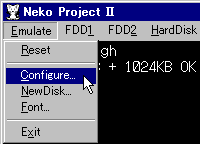
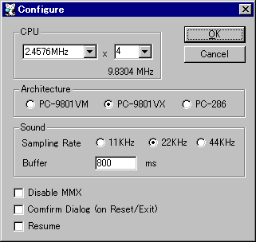

適当なフォルダに vaeg????.zip を解凍します。
88VA Eternal Grafxにはインストーラは付属しておらず、解凍された vaeg.exe をそのまま起動します。
[VA]
ROMイメージ必須です。外部ファイルの説明を参照してファイルを配置してください。
[98]
何も設定していない状態では、起動後にメモリカウントが始まり「システムディスクをセットしてください」と表示されます。

[Emulate - Configure...]を選択し 設定ダイアログを表示します。

[VA]
デフォルトではPC-88VA2(8MHz)が選択されています。変更の必要はありません。
[98]
エミュレーションするマシンとCPU動作とを設定します。
PentiumII以下のマシンでは処理落ちするケースが多いのでクロック数を下げてください。
Celeron以降のマシンにおいても、アプリケーションにより処理落ちしたり フレームスキップが発生して充分にエミュレートできない場合があります。
その場合は、CPU動作設定のクロック数を下げてください。
[共通]
続いてサウンド設定を行います。
マシンパワーがあれば 44KHzへ変更すると良いでしょう。
Bufferの値は 処理が追い付く最低の値を設定します。
環境によりますが、速いマシンであれば 200ms〜300ms, 通常で 500msくらいが目安です。
[98]
Resumeをチェックしておくと、PC-98NOTEのようにレジュームが働くようになります。
好みによりチェックして下さい。